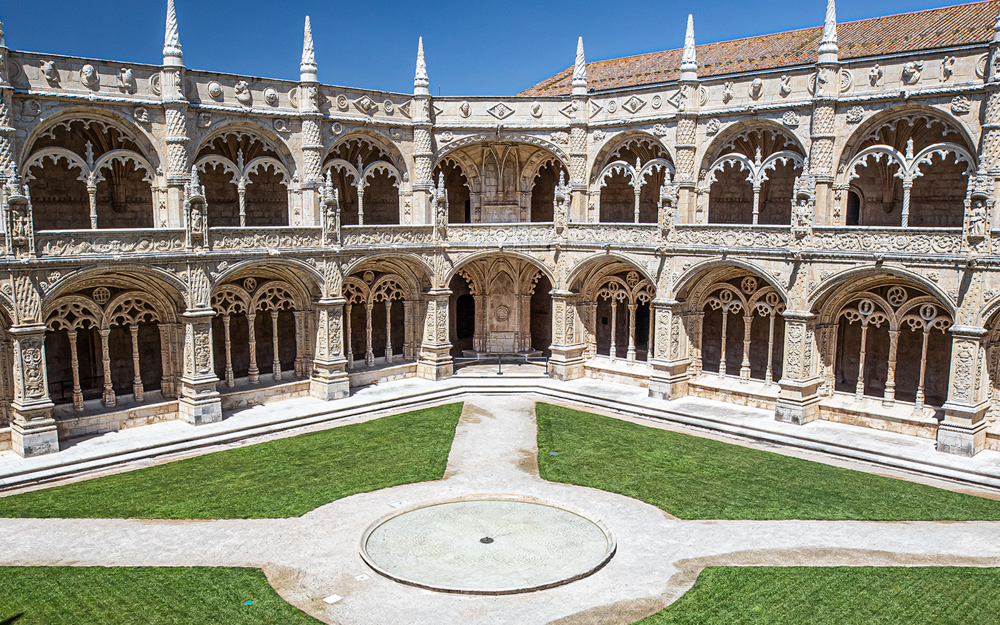
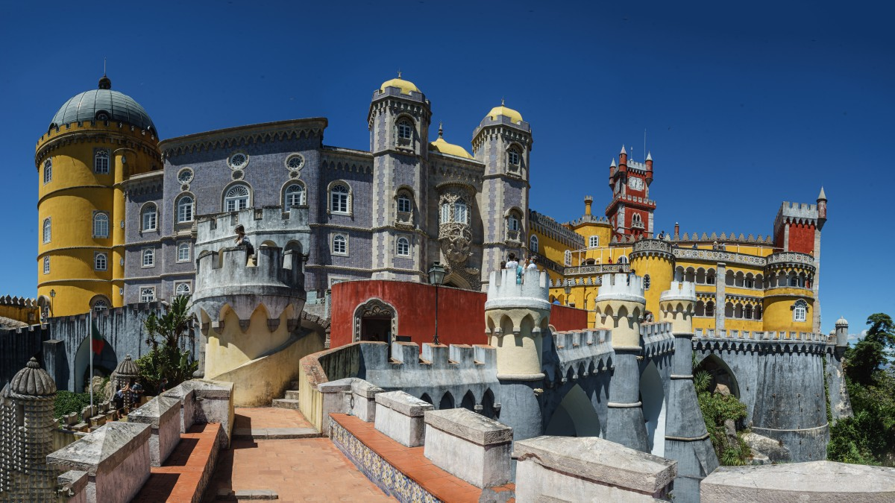
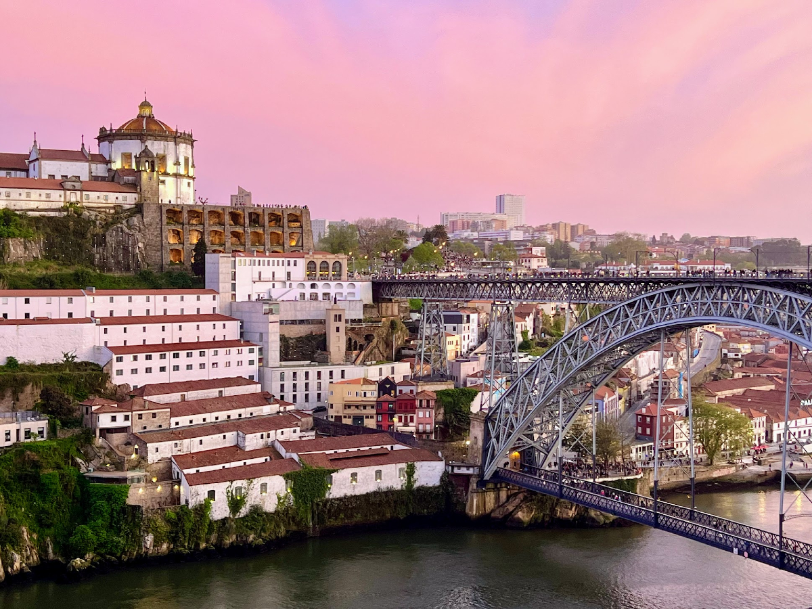
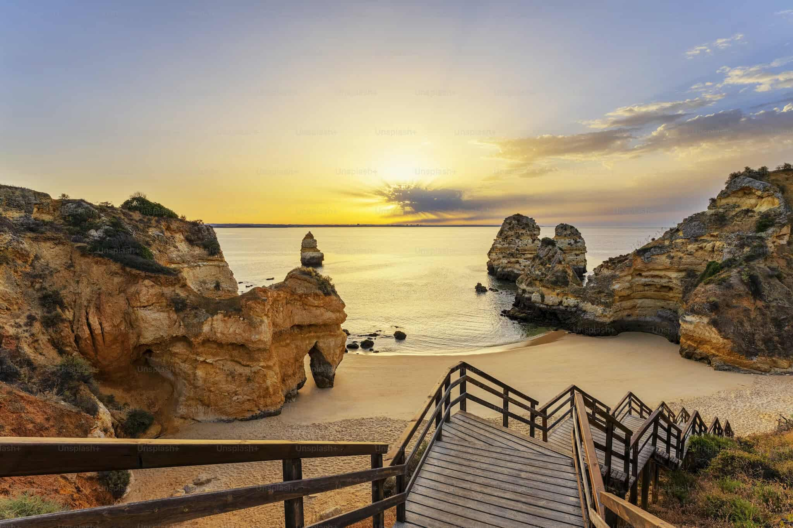

Belém Tower (Torre de Belém), Lisabon
Rising gracefully along the banks of the Tagus River, Belém Tower has stood as a guardian of Lisbon since the early 16th century. Once
a fortress defending the city and a ceremonial gateway for explorers setting sail, its intricate Manueline architecture tells tales of
Portugal’s golden Age of Discoveries. Visitors can wander through its turrets and balconies, marvel at the delicate stone carvings,
and take in sweeping views of the river and city beyond. As the sun sets, the tower glows with warm hues, creating a scene that feels
timeless and poetic. A must-see for any traveler — Belém Tower is not just a monument, but a journey through Portugal’s history,
beauty, and maritime spirit.
Best time to visit:
Early morning to enjoy the sunrise over the Tagus River, or late afternoon for soft lighting and fewer crowds. Spring and early autumn are ideal.
Opening hours:
Daily, approx. 10:00–17:30 (October–April) and 10:00–18:30 (May–September).
Entry:
Ticket required for tower access (around €6). The surrounding gardens and waterfront areas are free.
SEE MAP
Jerónimos Monastery (Mosteiro dos Jerónimos), Lisabon


Nestled in the heart of Belém, the Jerónimos Monastery is a masterpiece of Manueline architecture, celebrating Portugal’s Age of
Discoveries. Its soaring arches, intricate stone carvings, and serene cloisters invite visitors to step back in time, where explorers
once prayed before setting sail across uncharted seas. Sunlight dances through the ornate windows, casting delicate patterns on the
ancient floors, while every corner whispers stories of adventure, faith, and artistry. A must-visit for travelers, the monastery is
not merely a historic site—it is a living poem of Portugal’s maritime glory and timeless elegance.
Best time to visit:
Early morning right after opening or late afternoon to avoid long queues. Spring and autumn are ideal for pleasant weather.
Opening hours:
Daily, approximately 10:00–17:30 (October–April) and 10:00–18:30 (May–September). Closed on Mondays.
Entry:
Ticket required for the monastery interior (around €10–€12). Church access is usually free.
SEE MAP
Palácio da Pena, Sintra


Palácio da Pena, Sintra – Perched atop the misty hills of Sintra, Palácio da Pena rises like a fairytale from the clouds, a riot of
colors and romantic architecture blending Gothic, Manueline, and Moorish styles. Once a royal summer retreat, its terraces, towers,
and courtyards offer sweeping views of lush forests and the distant Atlantic. Wandering through its whimsical rooms and vibrant halls
feels like stepping into a storybook, where history and imagination entwine. A must-see for any traveler, Palácio da Pena is more than
a palace—it is a vivid dream carved in stone, a living symbol of Portugal’s enchantment and charm.
Best time to visit:
Early morning to avoid crowds and fog, or late afternoon for softer light and fewer tour groups.
Opening hours:
Daily, usually 9:30–18:30 (last entry about 1 hour before closing; hours vary by season).
Entry:
Ticket required. Palace + Park tickets range approximately from €14–€20, depending on age and options.
SEE MAP
Ribeira District, Porto


Nestled along the winding banks of the Douro River, the Ribeira District is a kaleidoscope of colorful houses, narrow cobbled streets,
and lively squares that pulse with life and history. Cafés spill onto the riverfront, inviting visitors to sip a glass of port wine
while watching boats drift by. The district’s medieval charm blends effortlessly with vibrant modern energy, where street musicians,
local markets, and hidden courtyards tell stories of centuries past. A must-visit for any traveler, Ribeira is more than a
neighborhood—it is the heart and soul of Porto, where every corner captures the city’s warmth, color, and timeless spirit.
Best time to visit:
Late afternoon to evening, when the riverside comes alive with warm light, street music, and sunset views over the Douro River.
Opening hours:
Open all day, year-round. Restaurants, cafés, and shops are typically open from late morning until late evening.
Entry:
Free to explore. Dining, river cruises, and wine bars are paid individually depending on your choices.
SEE MAP
Douro Valley
Winding through golden vineyards and gentle hills, the Douro Valley is a landscape of timeless beauty and serene elegance. Sunlight
dances across the terraced slopes, where centuries-old vineyards produce some of the world’s finest port wines. River cruises meander
along the Douro, revealing charming quintas, rustic villages, and quiet moments of reflection in nature’s embrace. A must-visit for
travelers, the valley is more than a destination—it is a sensory journey, where history, wine, and breathtaking scenery come together
in perfect harmony.
Best time to visit:
Late spring (May–June) for green landscapes and mild weather, or early autumn (September) during the grape harvest for the full wine-region
experience.
Opening hours:
Open year-round. Vineyards, viewpoints, and villages are accessible daily; wineries usually welcome visitors from late morning to afternoon.
Entry:
Free to explore the valley and viewpoints. Wine tastings and vineyard tours require tickets (approx. €10–€30 depending on the estate).
SEE MAP
Algarve Coast


Bathed in golden sunlight and kissed by turquoise waves, the Algarve Coast is a paradise of rugged cliffs, hidden coves, and endless
sandy beaches. Seaside villages with whitewashed houses and vibrant bougainvillea invite travelers to stroll along narrow streets,
savor fresh seafood, and breathe in the salty Atlantic air. As the sun sets, the cliffs glow in warm hues, creating moments of magic
that linger in memory. A must-visit for any traveler, the Algarve Coast is not just a destination—it is a celebration of Portugal’s
natural beauty, coastal charm, and timeless serenity.
Best time to visit:
Late spring (May–June) and early autumn (September–October) for warm weather, fewer crowds, and perfect sea conditions.
Opening hours:
Open year-round. Beaches and cliffs are accessible all day; boat tours and caves (like Benagil) run on scheduled daytime hours.
Entry:
Free access to beaches and coastal paths. Boat tours and kayaking experiences cost extra (approx. €15–€40 depending on activity).
SEE MAP